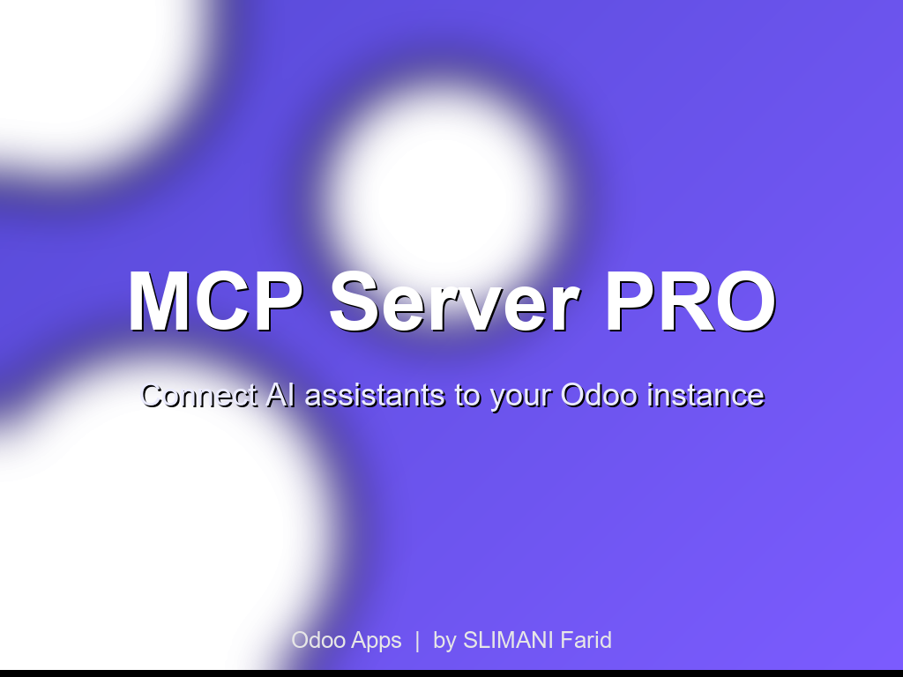

Connect AI assistants to your Odoo instance securely.
This module implements a Model Context Protocol (MCP) compatible endpoint that allows AI assistants like Claude, ChatGPT, or custom agents to query your Odoo data in real-time through a standardized API.
/mcp//json with Bearer tokensearch_, read_search_res.partner - Find partners by name, email, phonesearch_product.product - Search products with stock infosearch_sale.order - Query sales orderssearch_account.move - Access invoices and billssearch_stock.quant - Check real-time inventoryAll requests require a valid API key. Models are explicitly whitelisted. Request logging provides full auditability. Rate limits prevent abuse.
Works with any MCP-compatible client. Tested with Claude Desktop, custom Python/JS integrations.
Odoo Apps | by SLIMANI Farid | support: tech5262@gmail.com